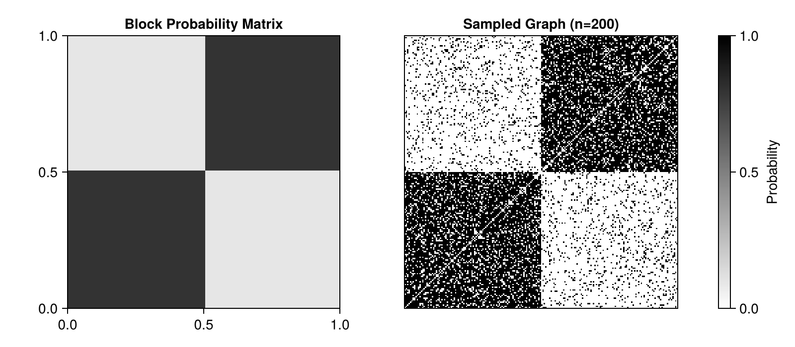
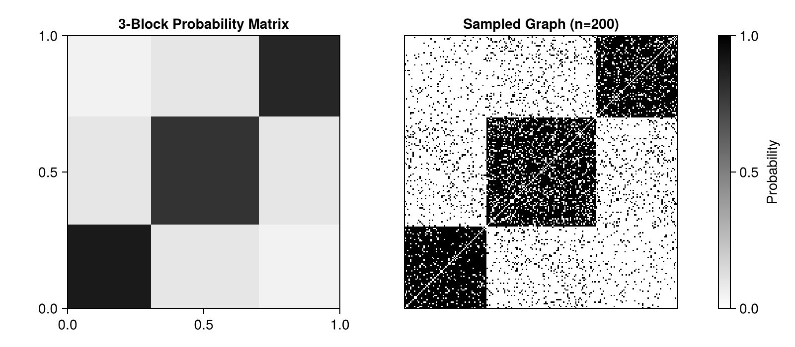
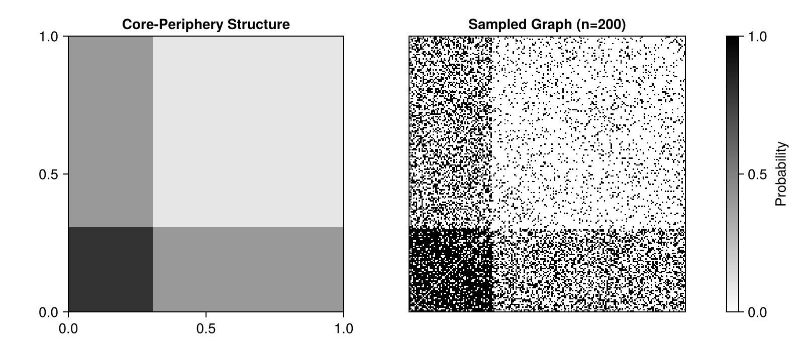
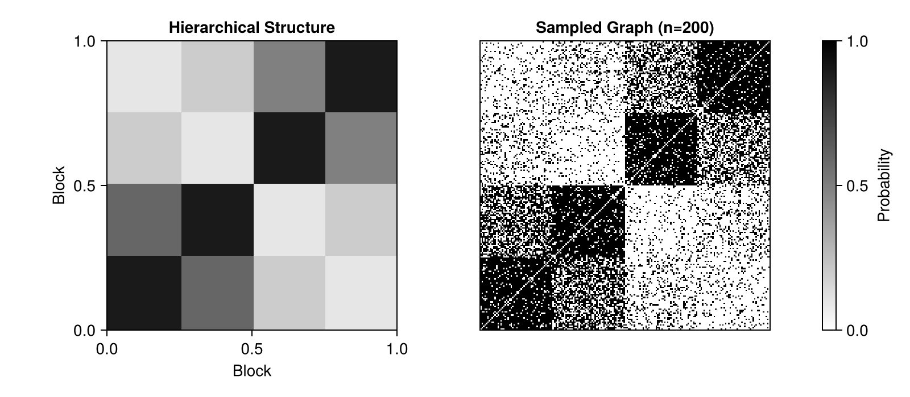
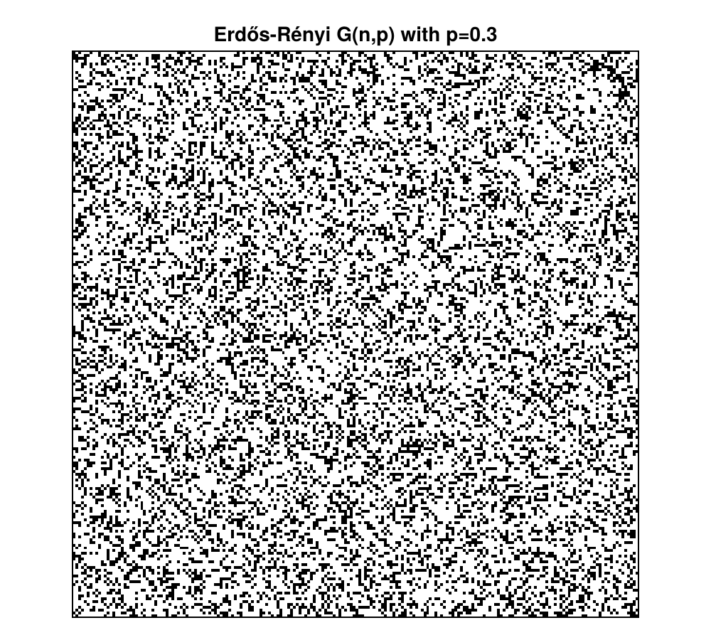
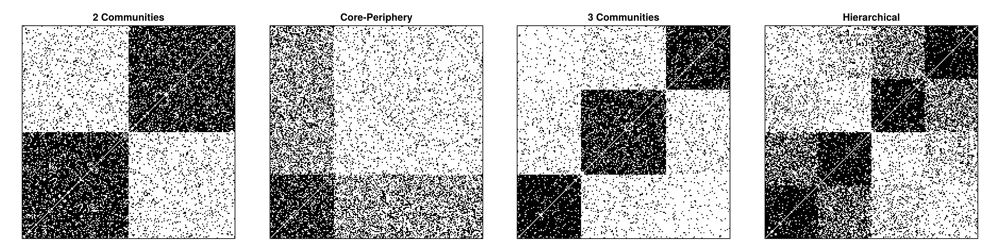
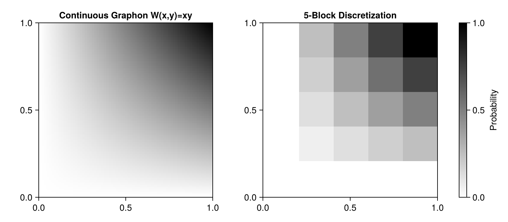
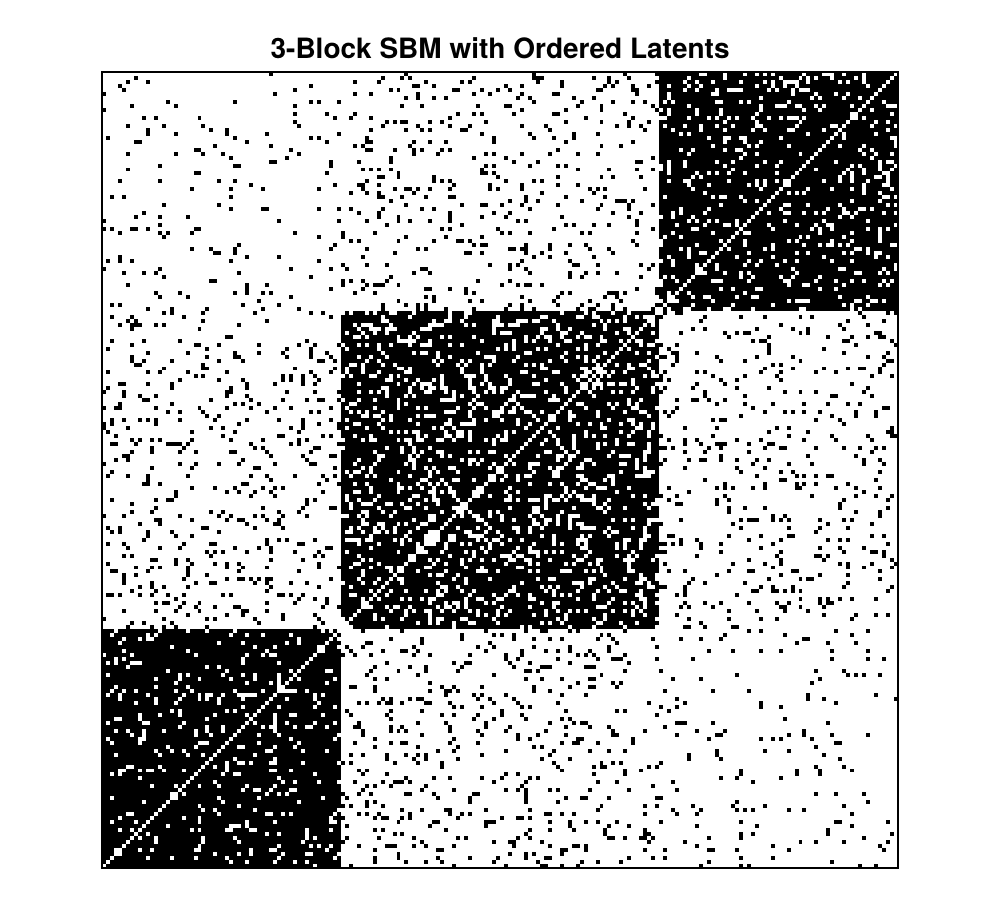

Stochastic Block Models
This tutorial focuses on Stochastic Block Models (SBMs), which are discrete graphons where nodes belong to blocks (communities) and edge probabilities depend only on block membership.
SBMs are widely used in network analysis because they:
- Capture community structure naturally
- Are computationally efficient
- Have well-understood statistical properties
- Can model various network architectures
Setup
Load the packages we'll need:
using Graphons
using Random
using CairoMakie
Random.seed!(42)TaskLocalRNG()Understanding Stochastic Block Models
An SBM is defined by two components:
- Block probability matrix θ: A k×k matrix where θ[i,j] is the probability of an edge between a node in block i and a node in block j
- Block sizes: The proportion of nodes in each block (must sum to 1)
For example, a 2-block model with equal-sized communities:
θ = [0.8 0.1; 0.1 0.8] # High within-block, low between-block
sizes = [0.5, 0.5] # 50% in each blockExample 1: Assortative Community Structure
Assortative networks have high within-block connectivity and low between-block connectivity. This creates distinct communities or clusters.
Two Communities
Let's create a network with two equal-sized communities:
θ_assort2 = [0.8 0.1; 0.1 0.8]
sizes_assort2 = [0.5, 0.5]
sbm_assort2 = SBM(θ_assort2, sizes_assort2)SBM{Matrix{Float64}, Vector{Float64}, Vector{Float64}}([0.8 0.1; 0.1 0.8], [0.5, 0.5], [0.5, 1.0])Visualize the block structure:
fig = Figure(size = (800, 350))
ax1 = Axis(fig[1, 1],
title = "Block Probability Matrix",
aspect = 1)
ax2 = Axis(fig[1, 2],
title = "Sampled Graph (n=200)",
aspect = 1)
heatmap!(ax1, sbm_assort2, colormap = :binary, colorrange = (0, 1))
hidedecorations!(ax2)
A_assort2 = sample_graph(sbm_assort2, 200)
heatmap!(ax2, A_assort2, colormap = :binary)
Colorbar(fig[1, 3], colormap = :binary, colorrange = (0, 1), label = "Probability")
fig
The two blocks are clearly visible in the sampled graph!
Three Communities
Let's create a more complex structure with three communities of different sizes:
θ_assort3 = [0.9 0.1 0.05;
0.1 0.8 0.1;
0.05 0.1 0.85]
sizes_assort3 = [0.3, 0.4, 0.3]
sbm_assort3 = SBM(θ_assort3, sizes_assort3)
A_assort3 = sample_graph(sbm_assort3, 200)
fig = Figure(size = (800, 350))
ax1 = Axis(fig[1, 1],
title = "3-Block Probability Matrix",
aspect = 1)
ax2 = Axis(fig[1, 2],
title = "Sampled Graph (n=200)",
aspect = 1)
heatmap!(ax1, sbm_assort3, colormap = :binary, colorrange = (0, 1))
hidedecorations!(ax2)
heatmap!(ax2, A_assort3, colormap = :binary)
Colorbar(fig[1, 3], colormap = :binary, colorrange = (0, 1), label = "Probability")
fig
Notice the three distinct blocks with different connection patterns!
Example 2: Disassortative Core-Periphery Structure
Core-periphery networks have a densely connected core and a sparse periphery that primarily connects to the core, not to itself.
θ_cp = [0.8 0.4; # Core is dense, core-periphery has medium connectivity
0.4 0.1] # Periphery is sparse
sizes_cp = [0.3, 0.7] # Small core (30%), large periphery (70%)
sbm_cp = SBM(θ_cp, sizes_cp)
A_cp = sample_graph(sbm_cp, 200)
fig = Figure(size = (800, 350))
ax1 = Axis(fig[1, 1],
title = "Core-Periphery Structure",
aspect = 1)
ax2 = Axis(fig[1, 2],
title = "Sampled Graph (n=200)",
aspect = 1)
heatmap!(ax1, sbm_cp, colormap = :binary, colorrange = (0, 1))
hidedecorations!(ax2)
heatmap!(ax2, A_cp, colormap = :binary)
Colorbar(fig[1, 3], colormap = :binary, colorrange = (0, 1), label = "Probability")
fig
The small, dense core (top-left) is clearly visible, with sparser connections to the periphery.
Example 3: Hierarchical Structure
We can create hierarchical networks with multiple levels of organization:
θ_hier = [0.9 0.6 0.2 0.1;
0.6 0.9 0.1 0.2;
0.2 0.1 0.9 0.5;
0.1 0.2 0.5 0.9]
sizes_hier = [0.25, 0.25, 0.25, 0.25]
sbm_hier = SBM(θ_hier, sizes_hier)
A_hier = sample_graph(sbm_hier, 200)
fig = Figure(size = (800, 350))
ax1 = Axis(fig[1, 1],
title = "Hierarchical Structure",
xlabel = "Block",
ylabel = "Block",
aspect = 1)
ax2 = Axis(fig[1, 2],
title = "Sampled Graph (n=200)",
aspect = 1)
heatmap!(ax1, sbm_hier, colormap = :binary, colorrange = (0, 1))
hidedecorations!(ax2)
heatmap!(ax2, A_hier, colormap = :binary)
Colorbar(fig[1, 3], colormap = :binary, colorrange = (0, 1), label = "Probability")
fig
This creates a two-level hierarchy: blocks 1-2 form one meta-community, blocks 3-4 form another, with weak connections between them.
Example 4: Erdős-Rényi as a Special Case
The classic Erdős-Rényi random graph is just an SBM with one block:
θ_er = fill(0.3, 1, 1)
sizes_er = [1.0]
sbm_er = SBM(θ_er, sizes_er)
A_er = sample_graph(sbm_er, 200)
fig = Figure(size = (500, 450))
ax = Axis(fig[1, 1],
title = "Erdős-Rényi G(n,p) with p=0.3",
aspect = 1)
hidedecorations!(ax)
heatmap!(ax, A_er, colormap = :binary)
fig
Uniform random structure with no community organization.
Comparing Different Structures
Let's compare all the structures side by side:
fig = Figure(size = (1400, 350))
models = [
("2 Communities", sbm_assort2),
("Core-Periphery", sbm_cp),
("3 Communities", sbm_assort3),
("Hierarchical", sbm_hier)
]
for (i, (title, sbm)) in enumerate(models)
ax = Axis(fig[1, i], title = title, aspect = 1)
hidedecorations!(ax)
A = sample_graph(sbm, 200)
heatmap!(ax, A, colormap = :binary)
end
fig
Each structure creates distinct visual patterns in the adjacency matrix!
From Continuous Graphons to Block Models
We can discretize any continuous graphon into an SBM using discretized_graphon:
W_smooth(x, y) = x * y
graphon_smooth = SimpleContinuousGraphon(W_smooth)
sbm_from_graphon = discretized_graphon(graphon_smooth, 5) # 5 blocks
fig = Figure(size = (800, 350))
ax1 = Axis(fig[1, 1],
title = "Continuous Graphon W(x,y)=xy",
aspect = 1)
ax2 = Axis(fig[1, 2],
title = "5-Block Discretization",
aspect = 1)
heatmap!(ax1, graphon_smooth, colormap = :binary, colorrange = (0, 1))
heatmap!(ax2, sbm_from_graphon, colormap = :binary, colorrange = (0, 1))
Colorbar(fig[1, 3], colormap = :binary, colorrange = (0, 1), label = "Probability")
fig
The SBM provides a piecewise-constant approximation of the smooth graphon.
Analyzing Block Structure
We can extract and analyze the block structure:
println("Block probability matrix:")
println(sbm_assort3.θ)
println("\nBlock sizes:")
println(sbm_assort3.size)
println("\nCumulative sizes (for latent position mapping):")
println(sbm_assort3.cumsize)Block probability matrix:
[0.9 0.1 0.05; 0.1 0.8 0.1; 0.05 0.1 0.85]
Block sizes:
[0.3, 0.4, 0.3]
Cumulative sizes (for latent position mapping):
[0.3, 0.7, 1.0]When sampling with explicit latents, the latent position determines block membership:
ξs = range(0, 1, length = 200)
A_ordered = sample_graph(sbm_assort3, ξs)
fig = Figure(size = (500, 450))
ax = Axis(fig[1, 1],
title = "3-Block SBM with Ordered Latents",
aspect = 1)
hidedecorations!(ax)
heatmap!(ax, A_ordered, colormap = :binary)
fig
With ordered latents, the block boundaries are perfectly visible!
Key Takeaways
- Stochastic Block Models discretize the graphon into k blocks
- Assortative SBMs create community structure (high within-block, low between-block)
- Disassortative SBMs create core-periphery or other mixing patterns
- Block sizes can be unequal to model realistic heterogeneity
- Any continuous graphon can be discretized with
discretized_graphon(graphon, k) - SBMs are computationally efficient for large networks
Next Steps
- For multiplex networks and rich edge attributes, see the Decorated Graphons tutorial
- For smooth, continuous structures, use
SimpleContinuousGraphon - For model selection, consider using statistical inference on real network data
This page was generated using Literate.jl.